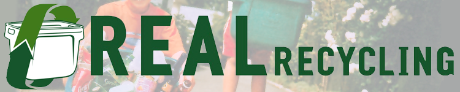

We Take
We take corrugated cardboard but it has to be manageable for our collectors. Flatten and tie the cardboard in bundles no bigger than your crate, making it easy to pick up. Loose cardboard is not only differcult to collect but on windy days ends up all over the street and simply becomes litter.
By the way, pizza boxes are okay, as long as they're clean and tied. (We don't want last night's left-overs.)
Remember
Bind (500mm diameter max) your cardboard tightly so that it can be thrown easily onto the trucks.
Large amounts of cardboard can be dropped off, for free, at your local refuse/recycling station.